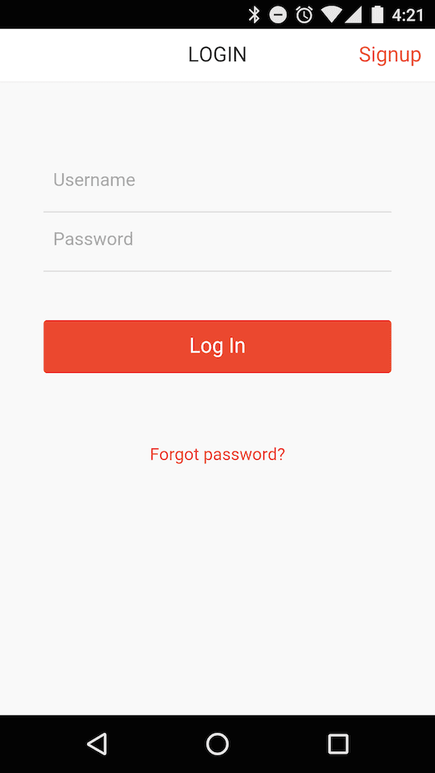
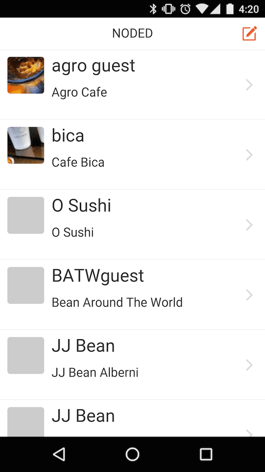
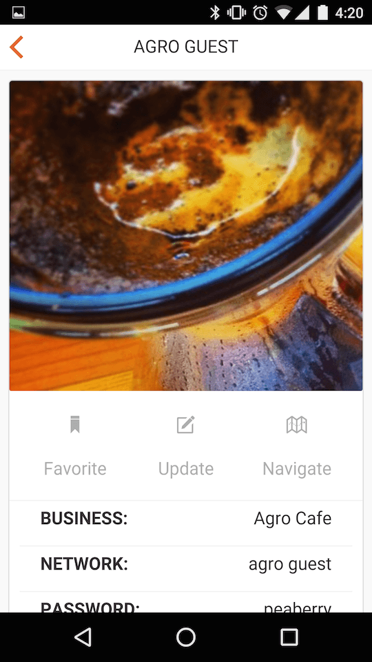
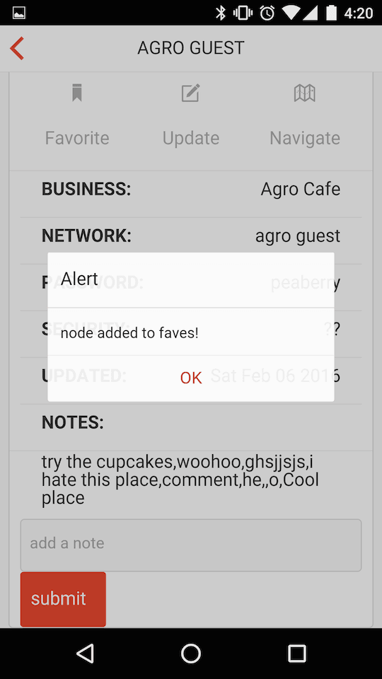
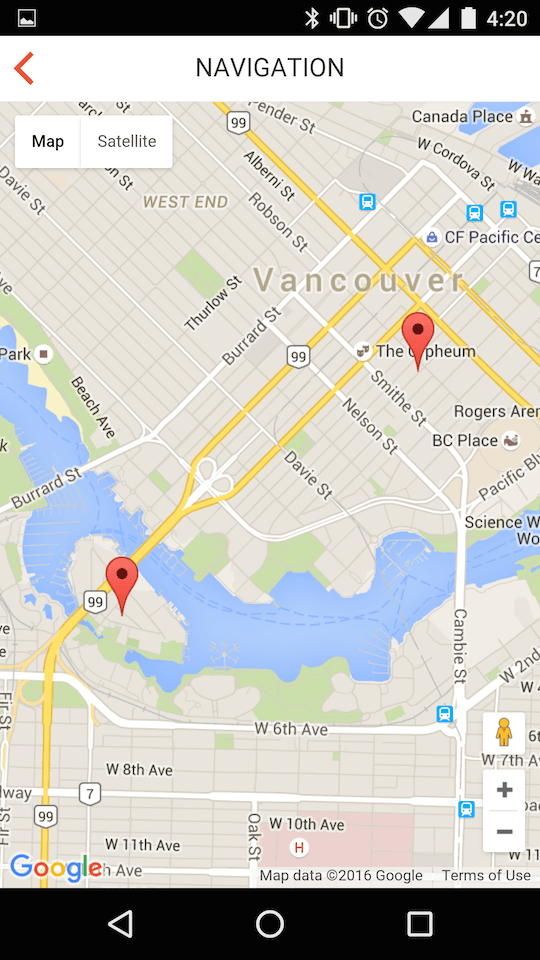
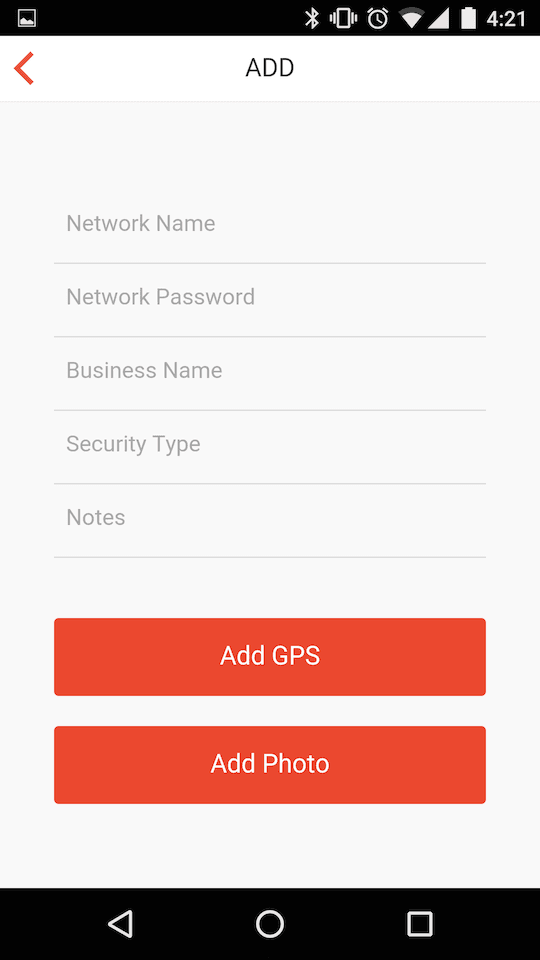

Noded is a hybrid mobile application - for iOS and Android -
that I made as an open source teachng tool for my Mobile Application Development class at Emily Carr University.
It is a basic CRUD app - using Parse as a backend, and Onsen UI as a frontend on top of a PhoneGa application.
The app provides a read-write database of locations with password protected WiFi networks,
but ones where the passwords are easily accessible - cafes, libraries, public businesses.
Users are able to view a list of 'Nodes', access more information on a particualr node, suggest edits or notes, and add new locations.
Users are also able to browse the list in a map view, with geolocated results.
The application has not been released publically, as it was intended as a teaching tool,
but the source code can be found on my
GitHub.





